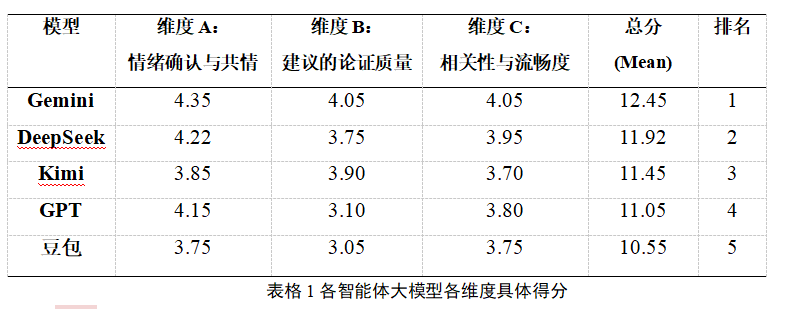
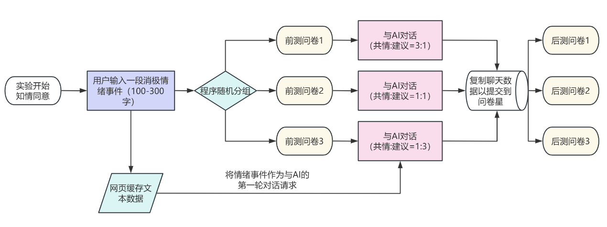
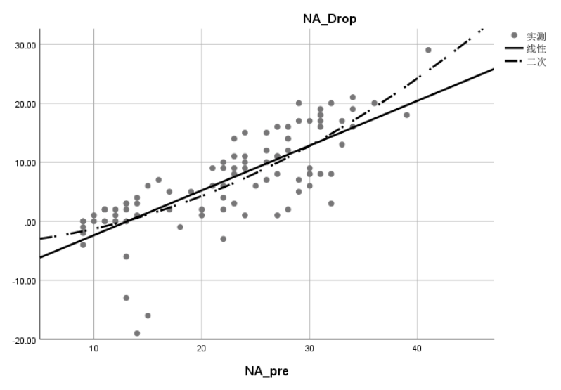

研究问题
随着生成式AI从工具转向情感交互对象，大学生开始将其作为情绪倾诉与调节的重要渠道。在这一背景下，本研究关注一个核心问题：
当个体处于负面情绪中时，AI的回应更偏向情绪共情，还是提供具体建议？不同回应风格是否会对情绪调节效果产生差异。
本研究旨在系统比较不同"共情—建议配比"的AI回应方式，并进一步揭示AI情绪支持的核心作用机制。
理论基础
基于情绪调节理论与CASA理论，共情通过情绪接纳降低负性体验，建议通过认知重评改变问题理解。本研究将二者整合为不同配比的AI回应风格进行比较。
前期研究
对主流大模型回复进行分析发现，其情绪支持风格存在稳定差异：有的偏共情（约3:1），有的偏建议（约1:3），也有相对均衡（约1:1）。
进一步评估显示，共情与建议相对均衡的模型表现最佳。其中，Gemini得分最高（M = 12.45），DeepSeek次之（M = 11.92），显著优于其他模型。因此，在保证可接入性与稳定性的前提下，最终选用 DeepSeek-V3 作为实验底座模型，并通过提示词控制其输出风格。

实验设计与核心结果
实验设计
研究采用混合设计，自变量为AI回应风格（1:1、1:3、3:1），因变量为情绪变化（PANAS量表：正性情绪PA、负性情绪NA）。
有效样本 N = 97。实验通过自传体记忆诱发负面情绪后，被试与AI进行3–10轮对话，并完成前后测。

核心结果
不同回应风格在情绪调节效果上无显著差异（PA_post: F(2,93)=0.000, p=1.000；NA_post: F(2,93)=0.029, p=.972），说明共情与建议比例本身并非关键因素。
但AI互动整体具有显著效果，并呈现出明确的方向性差异：
- 正性情绪提升：M = 9.01
- 负性情绪下降：M = 6.90
- 差异显著：t(96) = -2.72, p = .008
即：AI更擅长提升正性情绪，而非直接消除负性情绪。
此外，基线负性情绪对干预效果具有强预测作用（β = .759, R² = .603, p < .001），表明初始情绪越差，改善幅度越大。情绪提升与下降之间呈显著正相关（r = .642, p < .001）。
机制结论
AI情绪调节的核心机制并非通过减少负性情绪，而是通过唤起正性情绪，从而间接实现整体情绪状态的改善。这一过程证实了积极情绪具有抵消负性情绪影响的作用，并能引导个体进入情绪改善的良性循环。

同时，互动字数与效果无显著关系（p > .05），说明调节效果依赖于回应质量与支持感，而非表达量的多少。
研究结论
AI情绪支持的关键不在于共情与建议的比例，而在于是否能够提供高质量回应并有效激发正性情绪。大学生对不同回应风格具有较高适应性，只要AI具备基本的情绪理解与问题回应能力，即可产生稳定的调节效果。
创新点与AI平台搭建
AI平台搭建
本研究构建了完整的人机交互实验平台：
- 模型层：基于 DeepSeek-V3，通过Prompt控制共情-建议比例（1:1 / 1:3 / 3:1）
- 后端：Python服务器部署于腾讯云，负责API调用与数据转发
- 前端：网页 + JavaScript，实现对话界面与流程控制
- 通信方式：AJAX异步请求，实现实时对话
- 限制机制：单次回复≤120字，保证交互流畅性与实验一致性
该架构解决了前端无法直接调用API（CORS）的问题，实现了真实、可控、可复现的人机交互实验环境。